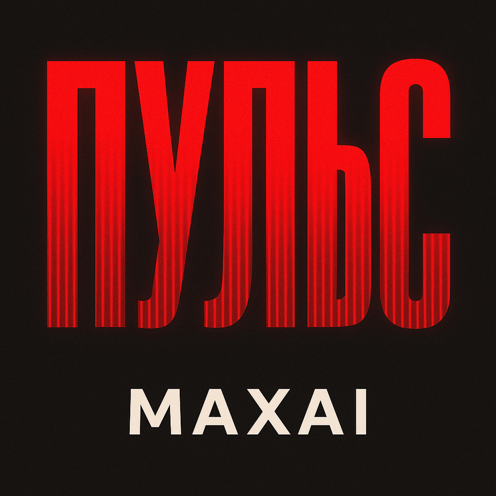

05.03.2026
Ты во мне — как ядерный взрыв,
Я бегу ведь любовь, это миф.
Слишком поздно сказал «прости»,
Ты молчишь — и горят мосты.
Мы молчим — но горим до конца,
Ты — мой страх, ты — моя высота.
Сколько б в прошлом ни было зла,
Ты — как пульс, что во мне навсегда.
Каждый день — как обрывок сна,
Ты внутри — как слепая тьма.
Я ломаю в себе тебя,
Но нельзя убежать в никуда.
Мы молчим — но горим до конца,
Ты — мой страх, ты — моя высота.
Сколько б в прошлом ни было зла,
Ты — как пульс, что во мне навсегда.
Где ты есть — я сжигаю всё,
Где я был — там твое лицо.
Ты одна, кто живёт в огне,
Я сгораю, лёжа на дне.
Я в огне без тебя и с тобой,
Не спасусь, если стану собой.
Мы молчим — и сгораем дотла,
Ты — мой страх, ты — моя высота.
Даже если забыл тебя,
Пульс в груди — ты. И ты — навсегда.
До прослушивания: Тревога, внутренний разрыв, ощущение, что любовь — это боль и ловушка.
После прослушивания: Жгучее принятие, осознание зависимости, ощущение “это навсегда”, даже если пытаешься забыть.
«Пульс» — о связи, которую невозможно выключить: человек пытается убежать, забыть, “сломать в себе”, но чувство остаётся как биение сердца. Молчание тут звучит громче слов: мосты горят, но внутри всё равно живёт тот самый “пульс”.
Куплеты — нарастание боли и одержимости, кадры-обрывки (сон, тьма, огонь).
Припев — главная формула трека: страх/высота/пульс “навсегда”, повтор усиливает эффект зацикленности.
Голос — человек на грани: одновременно любит и пытается вырваться. Интонация напряжённая, честная, без украшений — как признание, которое уже поздно спасать.